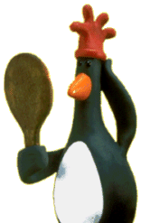

I grew up watching cartoons. I remember I used to watch Mickey Mouse Clubhouse before going to elementary school. I also liked making stories and drawing the characters.
I look for things that light my eyes up. It’s not only relegated to bright flashing lights and myriads of color, but for things that flow like rivers into larger bodies of water. The crashing, turbulent waves can also be soft and quiet. Words set in theatrical dialogues can sway audiences' emotions to rage, then joy, in the same 90 minutes. The same way the sounds of thunder and lightning are dreary and frightening, juxtaposed with bird chirps in the early mornings. This comparison of creative media to the laws of nature is what inspires me creatively. When it comes to my creative process, I start by thinking of the kind of story to tell. Through world-building and character design, I can create the atmosphere of a dark October night or an empty realm of endless opportunities. Animation has always been an inspiration for my creative work. From watching shows and movies at an early age, I was taken by how endless and cinematic animation can be. Especially stop-motion studios like Laika and Aardman Animations. Frame by frame, characters come to life, and the fictional world livens your senses. I have also been greatly inspired by animator and storyteller Hayao Miyazaki’s movies. I aim to tell stories, dramatic and comedic, the same way Coraline, Wallace and Gromit, and Ponyo do on the big screen. In my pursuit of creative expression, I aim to build a world where my art comes to life and abstract ideas can convey thoughtful messages to all.